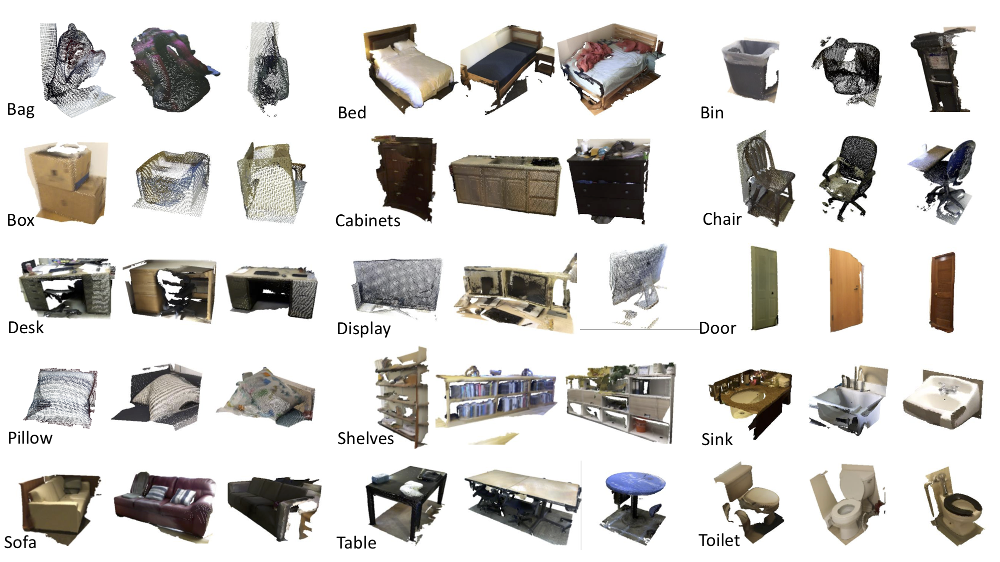

1Hong Kong University of Science and Technology
2Singapore University of Technology and Design 3The University of Tokyo
4Deakin University
International Conference on Computer Vision (ICCV), 2019 (Oral)

Sample objects from our ScanObjectNN dataset. The dataset
contains ~15,000 objects that are categorized into 15 categories with 2902 unique object instances.
The raw objects are represented by a list of points with global and
local coordinates, normals, colors attributes and semantic labels. We also provide part annotations, which to the best of our knowledge is the first on real-world data.
Abstract
Deep learning techniques for point cloud data have demonstrated
great potentials in solving classical problems in 3D computer vision
such as 3D object classification and segmentation. Several recent 3D
object classification methods have reported state-of-the-art
performance on CAD model datasets such as ModelNet40 with high
accuracy ~92%. Despite such impressive results, in this paper, we
argue that object classification is still a challenging task when
objects are framed with real-world settings. To prove this, we
introduce ScanObjectNN, a new real-world point cloud object dataset
based on scanned indoor scene data. From our comprehensive
benchmark, we show that our dataset poses great challenges to
existing point cloud classification techniques as objects from
real-world scans are often cluttered with background and/or are
partial due to occlusions. We identify three key open problems for
point cloud object classification, and propose new point cloud
classification neural networks that achieve state-of-the-art
performance on classifying objects with cluttered background.
@inproceedings{uy-scanobjectnn-iccv19,
title = {Revisiting Point Cloud Classification: A New Benchmark Dataset and Classification Model on Real-World Data},
author = {Mikaela Angelina Uy and Quang-Hieu Pham and Binh-Son Hua and Duc Thanh Nguyen and Sai-Kit Yeung},
booktitle = {International Conference on Computer Vision (ICCV)},
year = {2019}
}
Acknowledgements
We would like to sincerely thank Tan Sang Ha, Fan Wai Shan, Xu Ting Ting, Loh Pie Huan, Luong Van An, Ng Shi Xian Bryden, Li Jingxin and Chiz Huang for helping in the part annotations.
This research project is partially sup- ported by an internal grant from HKUST (R9429).